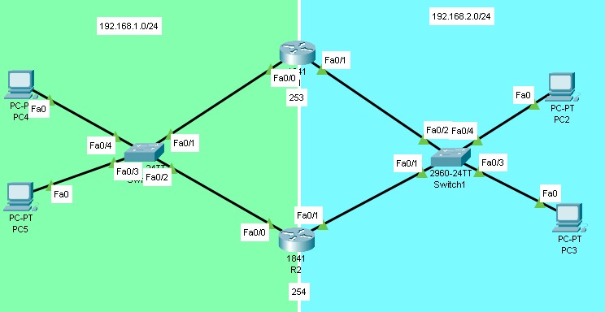

<html>
<head>
    <title>Tutoriel HSRP avec deux routeurs Cisco</title>
    <style>
        body {
            font-family: Arial, sans-serif;
            max-width: 800px;
            margin: auto;
        }
        h1 {
            text-align: center;
        }
        h2 {
            border-bottom: 1px solid #ccc;
            padding-bottom: 8px;
        }
        ul {
            list-style-type: none;
            padding: 0;
        }
        li {
		 max-width: 800px;
            margin-bottom: 8px;
			word-wrap: break-word;
        }
		p {
		 word-wrap: break-word;
		 }
		 
		 pre {
		 word-wrap: break-word;
		 color : lime;
            background-color: #000000;
            padding: 10px;
            border-radius: 5px;
            font-size: 14px;
			
		 }
    </style>
</head>
<body>

 <h2>Les bases du protocole HSRP</h2>
    <p>Le protocole HSRP (Hot Standby Router Protocol) est un protocole de redondance de passerelle développé
	par Cisco pour permettre la disponibilité continue d'une passerelle par défaut dans un réseau. HSRP 
	permet à plusieurs routeurs de travailler ensemble pour fournir une passerelle par défaut aux hôtes
	du réseau en cas de défaillance d'un routeur. Le protocole HSRP est propriétaire de Cisco, mais il
	est pris en charge par certains autres fabricants de matériel réseau.</p>
	
	<p>Voici les concepts de base du protocole HSRP :</p>
<ul>
    <li><strong>Groupes HSRP</strong> : Les routeurs qui participent à la redondance HSRP sont organisés en groupes.
	Chaque groupe HSRP a une adresse IP virtuelle (VIP) unique qui est partagée par tous les routeurs du groupe. 
	Les hôtes du réseau utilisent cette adresse IP virtuelle comme passerelle par défaut.</li>

    <li><strong>Rôles des routeurs</strong> : Dans un groupe HSRP, les routeurs assument l'un des trois rôles suivants :
	
	<br><br>
        <ul>
            <li> - Actif : Le routeur actif est responsable de l'acheminement du trafic vers les autres réseaux. 
			Il répond aux requêtes ARP pour l'adresse IP virtuelle et envoie des messages HSRP périodiques pour
			signaler sa présence aux autres routeurs du groupe.</li>
            <li> - Standby : Le routeur standby est prêt à prendre le relais en tant que routeur actif si le routeur actif
			tombe en panne. Il surveille les messages HSRP du routeur actif et prend le relais si le routeur actif cesse de fonctionner.</li>
            <li> - Écoute (Listen) : Les routeurs en mode écoute sont informés de l'état du groupe HSRP, mais ils ne sont 
			ni actifs ni standby. Ils sont prêts à passer en mode standby si le routeur standby tombe en panne.</li>
        </ul>
    </li>
	
	<br>
	<br>
	

    <li><strong>Priorité HSRP</strong> : Chaque routeur dans un groupe HSRP a une priorité configurée, qui détermine
	son rôle au sein du groupe. La priorité peut varier de 0 à 255, avec une valeur par défaut de 100. Le routeur avec 
	la priorité la plus élevée devient le routeur actif, et le routeur avec la deuxième priorité la plus élevée devient
	le routeur standby. Si deux routeurs ont la même priorité, le routeur avec l'adresse IP la plus élevée sur l'interface
	HSRP sera choisi.</li>

    <li><strong>Préemption</strong> : La préemption permet à un routeur dereprendre le rôle de routeur actif s'il possède
	une priorité plus élevée que le routeur actuel. Sans préemption, le routeur avec la priorité la plus élevée 
	ne prendra pas le rôle de routeur actif tant que le routeur actif actuel ne tombe pas en panne.</li>
</ul>
	
	<p>En résumé, HSRP est un protocole de redondance de passerelle qui permet à plusieurs routeurs de travailler ensemble
	pour fournir une passerelle par défaut stable et fiable aux hôtes du réseau. Grâce à HSRP, les réseaux peuvent maintenir
	la connectivité même en cas de défaillance d'un routeur.</p>
	
	
    <h1>Tutoriel HSRP avec deux routeurs Cisco</h1>
    <p>Dans ce tutoriel, nous allons configurer deux routeurs Cisco, R1 et R2, pour fonctionner avec le protocole HSRP
	(Hot Standby Router Protocol). Le but est d'avoir un routeur actif et un routeur standby, qui prendra le relais si 
	le routeur actif tombe en panne.</p>
    <h2>Topologie du réseau</h2>
    <ul>
        <li>Réseau 192.168.1.0/24</li>
        <li>Réseau 192.168.2.0/24</li>
        <li>R1 : f0/0 192.168.1.253, f0/1 192.168.2.253</li>
        <li>R2 : f0/0 192.168.1.254, f0/1 192.168.2.254</li>
    </ul>
	
	
	
	
    <h2>Configuration du routeur R1</h2>
    <pre>
Router> enable
Router# configure terminal
Router(config)# interface FastEthernet0/0
Router(config-if)# ip address 192.168.1.253 255.255.255.0
Router(config-if)# no shutdown
Router(config-if)# exit
<br>
Router(config)# interface FastEthernet0/1
Router(config-if)# ip address 192.168.2.253 255.255.255.0
Router(config-if)# no shutdown
Router(config-if)# exit
<br>
Router(config)# interface FastEthernet0/0
Router(config-if)# standby 1 ip 192.168.1.252
Router(config-if)# standby 1 priority 105
Router(config-if)# standby 1 preempt
Router(config-if)# standby 1 track FastEthernet0/1    // ça surveille l'autre interface si elle est down !
Router(config-if)# exit
<br>  
Router(config)# interface FastEthernet0/1
Router(config-if)# standby 2 ip 192.168.2.252
Router(config-if)# standby 2 priority 105
Router(config-if)# standby 2 preempt
Router(config-if)# standby 2 track FastEthernet0/0
Router(config-if)# exit
Router(config)# end
Router# write memory
    </pre>
    <h2>Configuration du routeur R2</h2>
    <pre>
Router> enable
Router# configure terminal
Router(config)# interface FastEthernet0/0
Router(config-if)# ip address 192.168.1.254 255.255.255.0
Router(config-if)# no shutdown
Router(config-if)# exit
<br>
Router(config)# interface FastEthernet0/1
Router(config-if)# ip address 192.168.2.254 255.255.255.0
Router(config-if)# no shutdown
Router(config-if)# exit
<br>
Router(config)# interface FastEthernet0/0
Router(config-if)# standby 1 ip 192.168.1.252
Router(config-if)# standby 1 priority 100
Router(config-if)# standby 1 preempt
Router(config-if)# standby 1 track FastEthernet0/1
Router(config-if)# exit
<br>
Router(config)# interface FastEthernet0/1
Router(config-if)# standby 2 ip 192.168.2.252
Router(config-if)# standby 2 priority 100
Router(config-if)# standby 2 preempt
Router(config-if)# standby 2 track FastEthernet0/0      
Router(config-if)# exit
Router(config)# end
Router# write memory
</pre>
<br>
<br>

 <ul>
        <li><strong>standby 1 ip 192.168.1.252</strong> : Cette commande configure l'adresse IP virtuelle (VIP) pour le groupe HSRP 1 sur l'interface.
		L'adresse IP 192.168.1.252 sera utilisée par les clients comme passerelle par défaut. Les routeurs participant
		au groupe HSRP 1 utiliseront cette adresse pour fournir la redondance.</li>
		 
		<li><strong>standby 1 priority 100</strong> : Cette commande définit la priorité pour le routeur dans le groupe HSRP 1.
		La valeur de la priorité peut aller de 0 à 255, avec une valeur par défaut de 100. 
		Le routeur ayant la priorité la plus élevée devient le routeur actif. Si deux routeurs ont la même priorité,
		le routeur avec la plus haute adresse IP sur l'interface sera choisi comme routeur actif.</li>
    
		<li><strong>standby 1 preempt</strong> : Cette commande permet au routeur de reprendre le rôle de routeur actif
		s'il possède une priorité plus élevée que le routeur actuel. Sans cette commande, le routeur avec la priorité la
		plus élevée ne prendra pas le rôle de routeur actif tant que le routeur actif actuel ne tombe pas en panne.</li>
 
</ul>
		
		
<h2>Vérification de la configuration</h2>
<p>Après avoir terminé la configuration des deux routeurs, vérifiez l'état HSRP sur chaque routeur pour vous assurer que tout fonctionne correctement.</p>
<h3>Routeur R1 :</h3>
<pre>
Router# show standby brief
Interface   Grp  Pri P State    Active          Standby         Virtual IP
Fa0/0       1    105 P Active   local           192.168.1.254   192.168.1.252
Fa0/1       2    105 P Active   local           192.168.2.254   192.168.2.252
</pre>
<h3>Routeur R2 :</h3>
<pre>
Router# show standby brief
Interface   Grp  Pri P State    Active          Standby         Virtual IP
Fa0/0       1    100 P Standby  192.168.1.253   local           192.168.1.252
Fa0/1       2    100 P Standby  192.168.2.253   local           192.168.2.252
</pre>
<pre>Les résultats montrent que le routeur R1 est actuellement le routeur actif et le routeur R2 est en mode standby.
 Les adresses IP virtuelles 192.168.1.252 et 192.168.2.252
 sont utilisées pour  les réseaux 192.168.1.0/24 et 192.168.2.0/24, respectivement.<pre>
 <br>
<p>En cas de défaillance du routeur R1, le routeur R2 prendra le relais en tant que routeur actif.</p>


<p> by john ward   </p>

</body>
</html>
